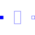
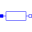
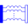
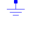

segment_lastMultiple line last segment model |

|
Information
This information is part of the Modelica Standard Library maintained by the Modelica Association.
The segment_last model is part of the multiple line model. It describes the special line segment which is used to get the line symmetrical as outlined in the M_OLine description. Using the loop possibilities of Modelica it is formulated by connecting components the number of which depends on the number of lines.
Parameters (8)
| lines |
Value: 3 Type: Integer Description: Number of lines |
|---|---|
| dim_vector_lgc |
Value: div(lines * (lines + 1), 2) Type: Integer Description: Length of the vectors for l, g, c |
| Rl |
Value: fill(1, lines) Type: Real[lines] Description: Resistance matrix |
| Ll |
Value: fill(1, dim_vector_lgc) Type: Real[dim_vector_lgc] Description: Inductance matrix |
| alpha_R |
Value: Type: LinearTemperatureCoefficient (¹/K) Description: Temperature coefficient of resistance (R_actual = R*(1 + alpha*(heatPort.T - T_ref)) |
| useHeatPort |
Value: false Type: Boolean Description: = true, if HeatPort is enabled |
| T |
Value: 293.15 Type: Temperature (K) Description: Fixed device temperature if useHeatPort = false |
| T_ref |
Value: Type: Temperature (K) |
Connectors (3)
| p |
Type: PositivePin[lines] Description: Positive pin |
|
|---|---|---|
| n |
Type: NegativePin[lines] Description: Negative pin |
|
| heatPort |
Type: HeatPort_a |
Components (3)
|  | R |
Type: Resistor[lines] |
|---|---|---|
|  | inductance |
Type: M_Transformer |
|  | M |
Type: Ground |
Used in Components (1)
|
Modelica.Electrical.Analog.Lines Multiple OLine |